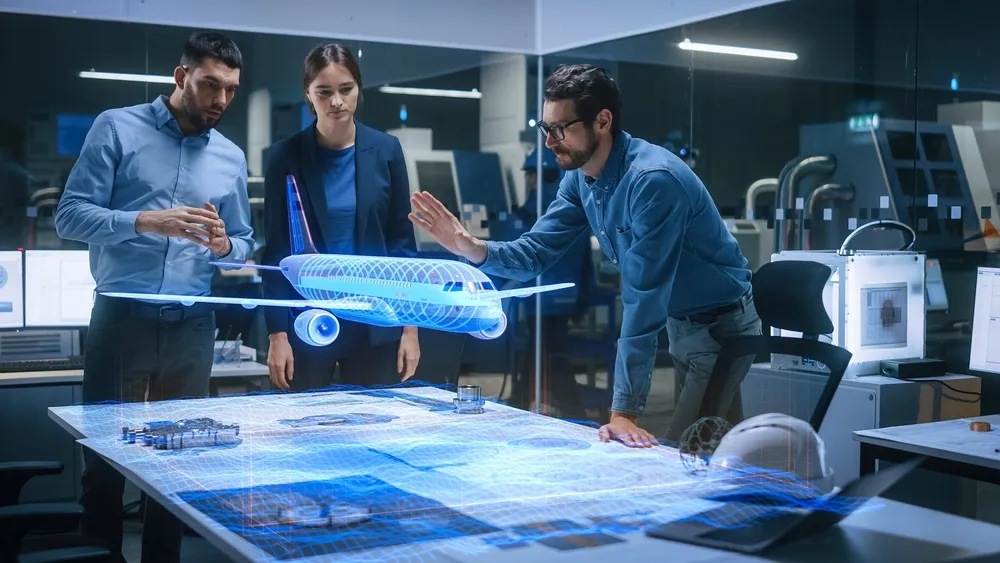
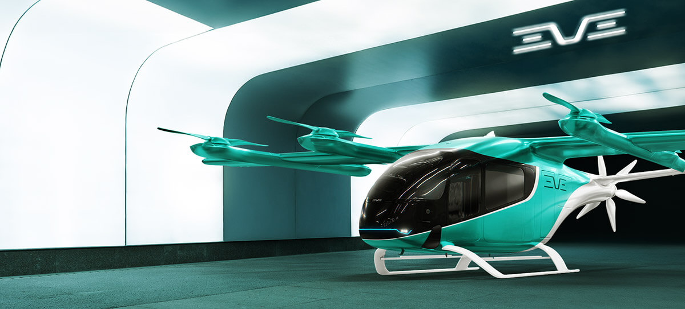

MI MENÚ
SOBRE ESTE PROYECTO
Una web creada para explorar, comparar y conocer diferentes grados universitarios y sus posibilidades profesionales.
HERRAMIENTAS UTILIZADAS
FUENTES DE INFORMACIÓN
CRÉDITOS Y AGRADECIMIENTOS
Se han utilizado herramientas de inteligencia artificial como ChatGPT y Microsoft Copilot como apoyo durante el desarrollo y la organización de los contenidos de este proyecto.
Las imágenes y recursos externos pertenecen a sus respectivos autores y titulares.
DISEÑA TU PRÓXIMO PASO
TIC 2 º Bachillerato
Ingeniería Civil
Ingeniería Aeroespacial

Ingeniero/a de diseño aeronáutico
Participa en el diseño y desarrollo de aviones, estudiando sus estructuras, materiales y sistemas para mejorar su funcionamiento.
Después de Bachillerato y la PAU, se cursa el Grado en Ingeniería Aeroespacial. Posteriormente, se puede adquirir formación especializada en diseño de aeronaves, estructuras y componentes para trabajar en empresas aeronáuticas.

Ingeniero/a de sistemas aeroespaciales
Colabora en el diseño, desarrollo y mejora de aeropuertos, pistas de aterrizaje e instalaciones relacionadas con la aviación.
El primer paso es estudiar Ingeniería Aeroespacial tras superar la PAU. Después, se puede profundizar en sistemas electrónicos, navegación y control para trabajar en el desarrollo de tecnología aeronáutica y espacial.

Ingeniero/a de investigación aeroespacial
Trabaja en el desarrollo de nuevas tecnologías, satélites, materiales y sistemas aplicados a la aeronáutica y al espacio.
Para dedicarse a este ámbito se necesita estudiar Ingeniería Aeroespacial y, normalmente, continuar con un máster o estudios especializados. Esto permite participar en proyectos de investigación y desarrollo de nuevas tecnologías.
Ingeniería Mecánica
¿Qué camino encaja contigo?
Tres carreras, tres formas diferentes de construir tu futuro.
Ingeniería Civil
Construir y transformar el entorno
Ideal para personas interesadas en las infraestructuras, la construcción y la planificación de ciudades. Una opción para quienes disfrutan resolviendo problemas y creando grandes proyectos.
Ingeniería Aeroespacial
Explorar nuevas tecnologías
Encaja con personas apasionadas por los aviones, el espacio y la innovación tecnológica. Requiere curiosidad científica y ganas de trabajar en proyectos avanzados.
Ingeniería Mecánica
Diseñar y mejorar máquinas
Puede ser una buena elección para quienes sienten interés por los motores, la maquinaria, la automoción y la industria, incluso por la competición del motor como la Fórmula 1.
Al final, todo depende de tus intereses.
Las tres opciones comparten una base científica y técnica, pero cada una permite aplicar esos conocimientos a problemas distintos. Elegir bien significa encontrar el campo que más te motive y en el que te gustaría desarrollar tu futuro profesional.